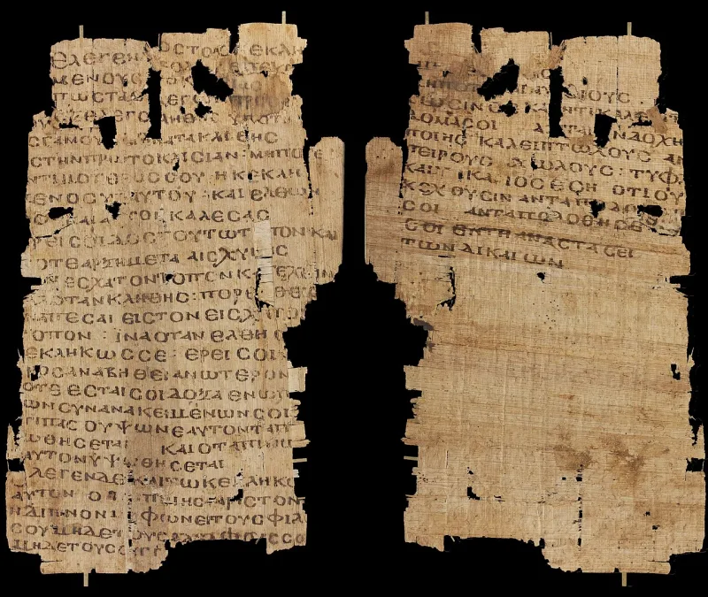
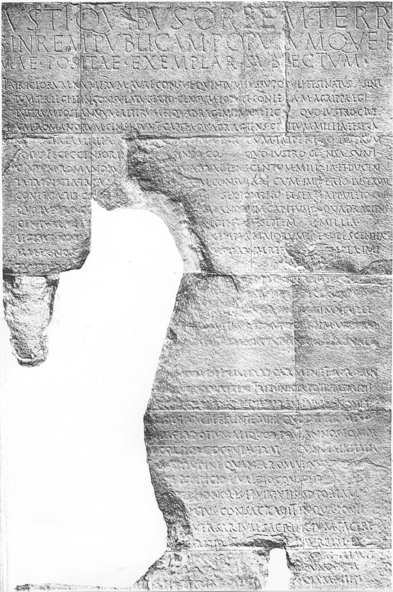
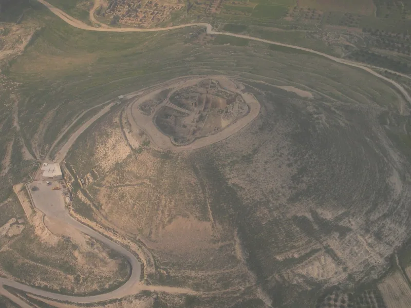

Serious philosophers argue this both ways. Say so before your friend does.
Luke 2:2 dates the birth of Jesus to a census "when Quirinius was governor of Syria." Josephus puts that census in AD 6. But Matthew and Luke both place the birth under Herod the Great, who died in 4 BC.
That is a ten-year collision. It is the best single card a skeptic holds against Luke.
Some translate Luke 2:2 as "before the census under Quirinius." Most Greek scholars judge that strained. Some propose an earlier Quirinius command in Syria, but the Lapis Tiburtinus inscription is missing the crucial name.
Some propose repeating registration cycles. None of these has won agreement.
Raymond Brown was a believing Catholic scholar and the standard authority on the birth narratives. He concluded that Luke probably got the mechanism wrong.
The skeptic's point is the difficulty itself, and it goes further. Rome taxed people where they lived and owned property.
No empire-wide order sent men to ancestral towns a thousand years back. So the simplest reading is that Luke, writing decades later, built a device to move a Galilean family to Bethlehem, where Micah 5:2 required the birth.
Matthew moves them by a different device that does not fit Luke's. Two writers solving one theological problem in ways that clash suggests the Bethlehem birth is theology, not memory.
Luke is demonstrably careful elsewhere. Colin Hemer catalogued scores of confirmed details in Acts: titles, routes, officials.
And no Christian doctrine rests on census paperwork.
Contested, and this case is here to model something. Concede it.
Never deploy the strained fixes as if they were solid. Say plainly that this is the best card in the skeptic's deck against Luke, that the fixes are possible but unproven, and that Christianity does not stand or fall here.
Someone who hears you say that will listen to the resurrection with different ears.
"Luke's census date looks wrong to me too, and nothing I believe depends on it."



Luke's census reads like a way to get the family to Bethlehem.
The skeptic's point is the difficulty itself, and it runs further. Luke's census is hard to credit on its own terms. Rome taxed people where they lived and owned property. No empire-wide order sent men back to the town of an ancestor a thousand years dead.
The simplest reading is that Luke, writing decades later, built a device to move a Galilean family to Bethlehem. Micah 5:2 required the birth there. Matthew moves the family by a different route, and the two do not fit. In his account they seem to live in Bethlehem, and then move to Nazareth.
Two authors, working apart, solve the same problem in ways that clash. That suggests the Bethlehem birth may be theology rather than memory.
Contested — concede this one; nothing you believe stands or falls on it.
Contested — and this entry's chief job is to teach. It shows a Christian audience how to concede a real difficulty without the sky falling.
Never deploy the strained harmonisations as if they were solid. Say instead that this is the best single card in the skeptic's deck against Luke. The fixes are possible, but unproven. And Christianity does not stand or fall on it. A skeptic who hears a Christian say that will listen to the resurrection case with different ears.
The weight this carries for the positive case is low. This is defence, done honestly.